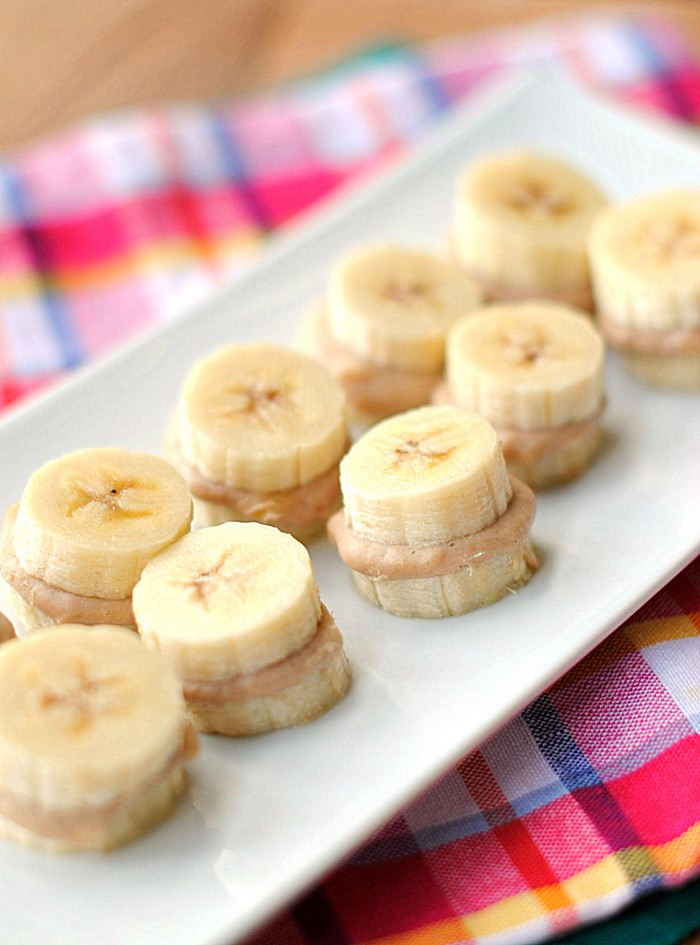
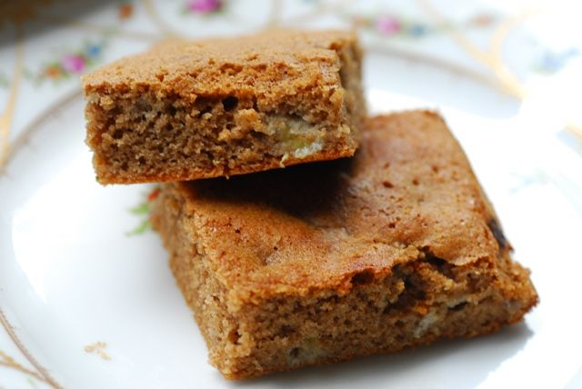

We are Nothern Ohio;s first oli-free and sugar-free granola company
We believe in not only having delicious foods but nutritious foods that you can feel good about eating
Our granola is made with the best ingredients we can find and made with love in our own home in beautiful Shaker Heights.
Being sugar free, we use whole dates as our sweetener of choice. None of that processed sugar in any of its forms here! Please take a look at our available products to find out more about our amazing and unique flavors!
Order Online
Because our granola is home-produced we are covered under Ohio cottage laws. This means we are unable to sell outside the state of Ohio for the time being. Therefore, in order to purchase online you have use one of the options below
Bananas for Coconuts
Our most snackable granola is a combination of dehydrated banana, coconut flakes and chia seeds, mixed with our three grain mix, mashed banana and coconut milk. This oone has been known to disappear shortly after the bag is opened, without ever making it to a bowl. This is a must have for anyone who is Bananas for Coconuts.
Ingredients: Bananaas, oats, millet, buckwheat, coconut flakes, dried bananas, shia seeds, coconut milk, (organic coconuts, water, organic guar gum).
Certified Organic
Mark's Peanut Butter Chocolate

Christopher's chocoholic dad, Mark, is the inspiration behind this classic combination.With freshly made peanut butter, cacao, nibs, and a dash of cinnamon, this granola isn't your typical peanut butter chocolate and is sure to satisfy those peanut butter chocolate carvings.
Ingredients: Oats, millet, date syrup, buckwheat, peanut butter, peanuts, cacao nibs, cinnamon
Certified Organic
Choose Your Own Adventure
Named after those great books you used to read as a kid, this granola lets you choose what you want in it. Our original flavor without nuts, seeds, or dired fruit and spices reminiscent of chai allows you to choose your granola adventure. The possibilities are endless!
Ingridients: Date syrup, oats, buckwheat, millet cinnamon, vanilla, ginger, cardamom.
Certified Organic